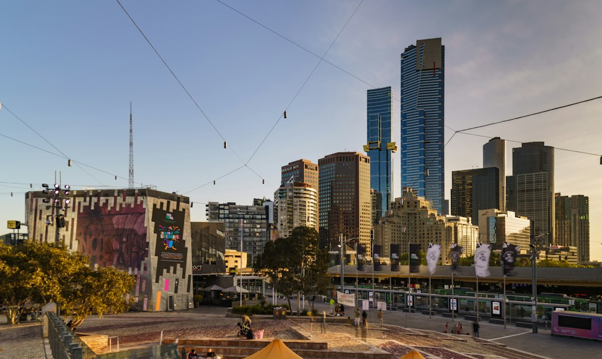

For Melbourne homeowners, the published cost guide puts a single-phase upgrade at $800 to $3,500+ and a three-phase upgrade at $3,000 to $5,000+, with the final quote set after assessment. The process described is three steps: enquiry, licensed electrician assessment and quote, then upgrade with a Certificate of Electrical Safety. The source also says main switchboard replacement is prescribed work that needs independent inspection in Victoria.
For homeowners comparing switchboard replacement melbourne options, the useful starting point is the existing board, the circuit load, asbestos backing questions and the certificate pathway after the work.
Switchboard Replacement Melbourne Explained
Switchboard Upgrades Melbourne describes a common Melbourne scenario: older homes still using ceramic fuse-type switchboards, rewireable fuses, limited spare capacity and no safety switches. For a homeowner, the useful inspection question is not simply whether the board looks old, but whether it still suits the way the house now uses power.
Practical signs to document before asking for a quote include fuses that keep blowing, circuits that trip when several appliances run together, and a board with no RCD protection. Photos of the board, the meter area and any visible labels can help the assessing electrician understand whether the job is a straightforward fuse box replacement, a safety switch installation, or a wider upgrade.
Some older ceramic fuse-type boards can include asbestos backing. The published source says small, sound non-friable boards may be handled by a trained electrician within strict limits, while other situations require a licensed asbestos removalist under WorkSafe Victoria rules. Treat that as a scoping question, not an assumption.
What changes in the upgrade
A modern board usually replaces rewireable fuses with circuit breakers and safety switches. The source page also mentions RCBOs, which combine overload protection and safety switch protection in one device. The right layout depends on the circuits, existing wiring condition and whether the home needs room for future circuits.
RCD safety switches are described as devices designed to cut power when current leaks to earth. Circuit breakers deal with overload protection. The quote should make clear which circuits receive which protection, whether old fuse carriers are being retired, and whether the new board is being prepared for solar, a smart meter or added appliances later.
Ask the assessing electrician to separate must-do compliance work from optional future-ready capacity. That makes the estimate easier to compare without reducing the job to the cheapest line item.
Single-phase, three-phase and future capacity
The source explains that most homes run on single-phase power, while larger homes, workshops and properties with higher-draw appliances often need three-phase power. Three-phase work is described as more involved, so it should be scoped by the electrician after checking the property rather than guessed from the street or suburb.
For a single-phase home, the common question is whether the replacement creates enough room for future circuits. For a higher-demand property, the question shifts to load, appliance plans and whether the switchboard can support the intended use. Solar and smart meter compatibility are also named on the published page, so homeowners planning those changes should raise them before the board is built.
A related crawl reference for the same topic is available in this Melbourne switchboard replacement guide, which frames the same decision around replacement planning.
Cost signals to confirm before accepting
The published ranges are broad: $800 to $3,500+ for a single-phase switchboard upgrade and $3,000 to $5,000+ for a three-phase upgrade. The page says circuit count and existing wiring condition can affect the single-phase range, while scope and complexity can affect three-phase work.
A useful quote should therefore state the type of board proposed, the number of circuits being protected, whether RCBOs or separate safety switches and circuit breakers are being used, whether asbestos backing has been allowed for, and whether any independent inspection requirement is included in the process.
- Ask whether the quote includes the Certificate of Electrical Safety.
- Ask whether main switchboard replacement will require an independent licensed electrical inspector.
- Ask how solar or smart meter plans affect the board layout.
- Ask what conditions could change the final price after assessment.
Who this applies to
This guide applies to Melbourne homeowners with older switchboards, especially homes with ceramic fuses, repeated tripping, no visible safety switches or plans for higher electrical demand. It also applies where a homeowner is comparing a basic fuse box replacement with a broader switchboard upgrade.
It is less useful for diagnosing a fault remotely. The source page centres the decision around assessment by a licensed electrician, and that is the appropriate point at which wiring condition, phase type, circuit count and asbestos backing can be checked. The page also says Victorian switchboard work must be done by a licensed electrician, with A-grade licensing allowing unsupervised installation work.
For the homeowner, the cleanest preparation is a short brief: property type, current symptoms, photos, appliance plans and whether solar or smart meter work is being considered. That gives the electrician enough context to quote the actual board rather than a generic upgrade.
- Describe the existing board. Send photos and note whether the home has ceramic fuses, tripping circuits, no safety switches or planned electrical additions.
- Get the assessed quote. Have a licensed electrician check the switchboard, wiring and circuits before relying on the final price.
- Confirm compliance documents. Ask how the Certificate of Electrical Safety and any independent inspection for prescribed work will be handled.
| Option | When it may fit | Quote points to check |
|---|---|---|
| Single-phase upgrade | Most homes, according to the source page, use single-phase power. | Circuit count, wiring condition, safety switches, circuit breakers and future circuit room. |
| Three-phase upgrade | Larger homes, workshops and properties with higher-draw appliances may need it. | Scope, complexity, phase requirements, inspection pathway and final board capacity. |
| Old fuse box replacement | Homes with ceramic fuse carriers or worn fuse holders. | Whether asbestos backing is present and how removal will be handled. |
| Solar or smart meter preparation | Homes planning equipment that needs compatible modern protection. | Capacity, circuit protection layout and whether the board is ready before installation. |
Common questions
How much does a switchboard upgrade cost in Melbourne? The published guide gives $800 to $3,500+ for single-phase work and $3,000 to $5,000+ for three-phase work. The final quote depends on assessment, circuit count, wiring condition, scope and complexity.
Do older fuse boards always need asbestos removal? No. The source says some older ceramic fuse-type boards can have asbestos backing. A trained electrician may handle a small, sound non-friable board within strict limits, otherwise a licensed asbestos removalist is required.
What certificate should be issued after the upgrade? The source says a Certificate of Electrical Safety is issued on completion. It also says main switchboard replacement is prescribed work, so an independent licensed electrical inspector checks it.
Should solar or smart meter plans be mentioned before quoting? Yes. The source page says electricians handle upgrades for solar and smart meter compatibility, so those plans should be raised before the board layout is finalised.
This guide covers practical quote, scope, cost and certificate questions for Melbourne homeowners considering an older switchboard upgrade.